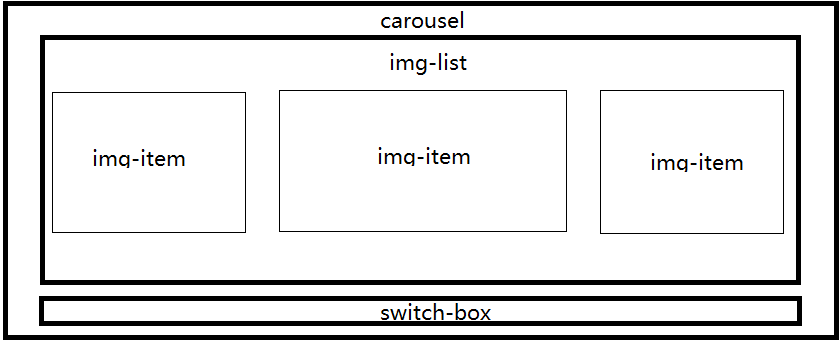
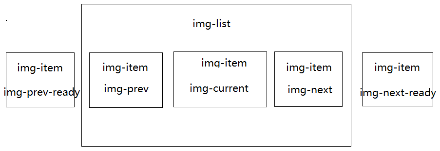

1：最终要实现的效果
Github地址：github.com/ovenzeze/AccordionCarousel
Demo地址：http://urlc.cn/RCa7B2
2：使用方法
|
|
new一个AccordionCarousel实例，传入包裹轮播的DIV和每一张图片的链接和地址，会自动根据图片的数量来生成轮播图和指示器。由于用到了Jquery，所以要用Jquery的方式来传递参数。
3：实现方案
3.1：整体布局

最外层是包裹整个轮播和指示器的div，所有的图片放在class为img-list的这个div内，与img-list同级的还有一个class为switchbox指示器的div.
3.2：CSS结构
因为这种方式的轮播图每张图片的位置都不一样，所以无法使用将所有图片拼接为一张再通过控制left值的方式来达到轮播的效果。所以在这里我为每个图片的位置设置了定位，一共五个位置，每个位置根据不同的class类名来区分，通过动态的切换类名来达到轮播的效果。
具体类名和位置如下：

在这里，为了达到有切换时图片从一个位置到另一个位置的切换效果，我一共使用了五个位置，在img-list的区域内有前一张图片（对应类名为img-prev），当前图片（对应类名为img-current），下一张图片（对应类名为img-next），而就绪状态的前一张图片（对应类名为img-prev-ready）和就绪状态的下一张图片（img-next-ready）。左右两侧的四张图片使用了CSS3中的transform属性，主要用到的是perspective rotateY translateZ三个属性，具体的使用大家可以参考MDN。
参考资料：
MDN-transform属性
MDN-使用CSS3transform属性
3.3：JS控制
库文件的基本结构如下：
4：此方案中的一些坑
4.1：事件绑定的更新
在之前的方案中，我直接将点击之后的处理逻辑绑定到单独的class上，代码如下：
这里的问题就是，我根据class值为DOM元素绑定点击事件，在事件触发后，即使这个DOM元素不在具有绑定的class值了，事件仍然绑定在此元素上，所以新的具有此class值的元素当然也就无法绑定到对应的事件上。
所以我现在的解决方案就是，不再根据图片的位置绑定不同的处理函数，直接为所有的图片点击事件添加监听，在事件触发后再根据是否具有对应的class值来使用不同的处理逻辑。
5：思路拓展
5.1：布局方案
现在采用的是根据类名来固定图片的位置，但是在操作图片的时候需要遍历所有的图片再找出对应的类名，这个操作是很不经济的。可以选择的一种方式是：使用五个固定的位置，根据对其中的位置绑定点击事件来使用不同的处理逻辑来切换图片，这样就不在需要为所有图片添加点击事件，代码更加简洁，也更加经济。
5.2：指示器
现在的指示器只能起到指示图片位置的作用，可以再稍加拓展一下，达到点击或者鼠标悬停时自动切换到对应的图片的功能。但是这种方式用我现在这种处理逻辑会很麻烦。再者，我现在使用的方案中没有通过为图片添加一个自定义的index属性来达到索引图片的目的，直接使用了DOM结构中的类数组来索引图片。推荐的方式是：使用统一的图片切换函数，为图片添加自定义属性index索引图片，只需要传入目标图片的index值就可以切换到对应图片。
5.3：优化引入方式
现在的方案里，需要引入三个文件，分别是Jquery库，我的AccordionCarousel库和对应的CSS文件，时间充裕的话，可以尝试使用原生JavaScript来写这个轮播，还可以把CSS的部分也用JavaScript代码的方式添加，这样就可以达到引入一个文件就可以使用的效果，这也是目前常规的做法。
6：总结
这是我第一次做一个组件库，踩了不少坑，也花了不少时间。总结起来就是JavaScript中还有很多高级特性需要细细探究，像我的代码中还用到了三个全局变量，如果我对原型链，this用法，闭包等再熟练一些应该完全可以避免。当然这个库还有很多地方需要完善，需要学习很多东西。